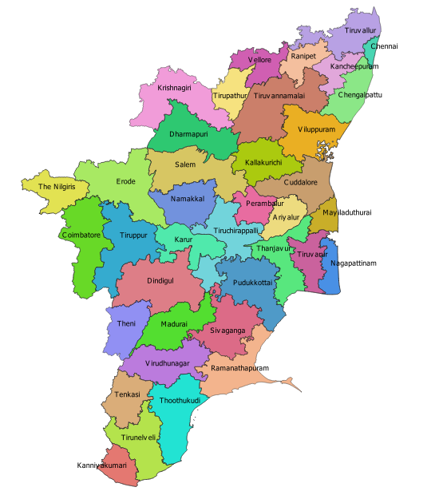

Historical Monuments of TamilNadu!
The following are the list of historical monuments in TamilNadu.Click on the places they are located in to know more about the monuments.
- Meenakshi Amman Temple - Madurai
- Brihadeeswarar Temple - Thanjavur
- Mahabalipuram - Chengalpattu
- Rock Fort Temple - Trichy
- Thiruvalluvar Statue - Kanyakumari
